Module 02 — Connaissances des notions de base Word¶
La transcription du support Drive et l’aide pédagogique sont séparées pour rendre leur provenance explicite.
SOURCE DRIVE · TRANSCRIPTION DU SUPPORT
Le contenu des documents du dossier TSSR est transcrit ci-dessous, page par page. Les textes et tableaux sont intégrés à la page Web. Aucun fichier PDF, aucune diapositive entière ni aucune reproduction de page n’est affiché. Seuls des croquis ou visuels isolés et vérifiés peuvent accompagner la transcription. Les versions et les consignes restent celles des supports de formation. Les compléments IA sont conservés dans leur onglet distinct.
Support · Module 02 - Support de cours · 21 pages transcrites
Page 1
Outils collaboratifs
Connaissances des notions de base Word
Objectifs
- Découvrir les fonctionnalités de Microsoft Word
- Mettre en forme un document
- Utiliser les fonctionnalités de Word qui permettent d’automatiser la mise en forme du document
Page 2
Connaissances des notions de base Word
L’interface de Word
Présentation de Word
- Au démarrage, choisir
- Nouveau document
- Un modèle
- Document récent

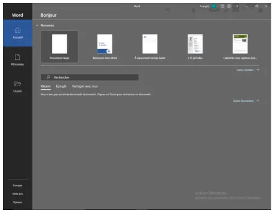
Page 3
| La barre accès rapide | La barre de titre | La zone utilisateur |
Le ruban Les règles
Les barres de défilement
La zone de rédaction
La barre d’état
Présentation de Word
- La barre de titre
- Affiche le nom du fichier et du logiciel
- Le ruban
- Séparé sous forme d’onglets
- Contenant les commandes par thèmes (accueil, mise en page, affichage…)
- La barre accès rapide
- Personnalisable
- Contient les commandes les plus utilisées
- La zone utilisateur
- Affiche le nom de l’utilisateur de la licence

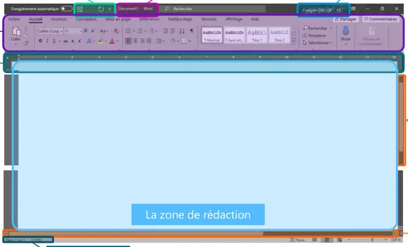
Page 4
- Les barres de défilement
- Permettent de naviguer dans le document
- La barre d’état
- Contient des informations sur le document
- Les règles
- Pas affichées par défaut
- Permet de positionner les éléments précisément et les taquets de tabulation
- La zone de rédaction
- Contient le texte de votre document
Connaissances des notions de base Word
Création d’un document
Page 5
Écriture d’un document
- Afficher les caractères non imprimables :
- Menu Accueil
- Écrire plusieurs pages du document
- Taper au kilomètre
- Sans mise en forme
- Identifier les différents éléments :
- Les titres
- Les paragraphes
- Les listes :
- À puces
- Numérotées
- Mettre en forme le document
- Alignement des paragraphes :
- Positionner des taquets de tabulations
- Utiliser les tabulations
- Espacement des paragraphes :
- Éviter les paragraphes vides
- Création des styles de paragraphes :
- Appliquer un style aux différents paragraphes
- Pas de paragraphe du style normal

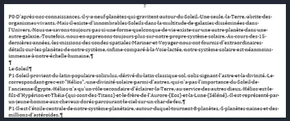
Page 6
- Mettre en forme le document
- Enchaînement des paragraphes :
- Lier les styles les uns aux autres
- Utilisation des sauts :
- Permettre de fixer le contenu de chaque page
- Création du sommaire automatiquement
- Finir l’écriture du document
Tenant Microsoft 365
Démo
Prise en main et création d'un document
Page 7
Connaissances des notions de base Word
Mise en forme d’un
document
Page de garde et sommaire
- Prévoir des pages vides (si nécessaire) :
- Pour la page de garde
- Pour le sommaire
- Insérer des sauts de page
- Menu Insertion
| Bouton sur le | Caractère non |
| bandeau | imprimable sur la page |
Page 8
Connaissances des notions de base Word
Gestion des titres
- Mettre en forme les titres :
- Choisir la numérotation
- Choisir la police :
- Casse (Majuscule/Minuscule)
- Taille
- Mettre en forme le texte
- Gras
- Italique
- Souligné
- Ajuster les retraits de la liste (clic droit sur la puce) :
- Espacement de la marge
- Espacement entre la numérotation et le texte (tabulation)
- Caractère entre la numérotation et le texte :
- Tabulation ou Espace

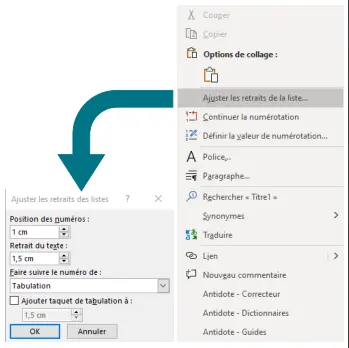
Page 9
- Mettre en forme le style Titre
- Mettre à jour le style Titre1 avec le titre nouvellement créé
- Menu Accueil
- Procéder de la même façon avec les autres titres
- Les autres titres apparaissent automatiquement dans l’accès rapide des styles
- Hiérarchiser la numérotation des titres
- Gérer grâce à la liste à plusieurs niveaux
①
②
- À chaque niveau
| • Appuyer sur le bouton Plus en bas à gauche | ① | |
| • Choisir le style | ② | |
| • Choisir la mise en forme si nécessaire | ③ | ③ |
| • Choisir la position du texte | ④ |
- La mise en forme des titres peut être
④
refaite titre par titre

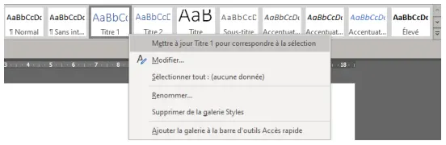

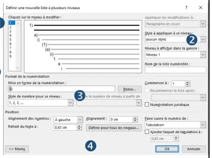
Page 10
Les étapes
- 1. Créer les différents titres
- 2. Définir la liste à plusieurs niveaux
- 3. Refaire la gestion des retraits qui aura sûrement été modifiée
Connaissances des notions de base Word
Gestion des paragraphes

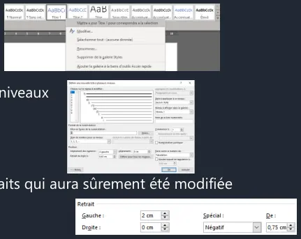
Page 11
- Mettre en forme des paragraphes
- Aligner le paragraphe par rapport au titre
- Ajuster les retraits
- Modifier les taquets sur la règle
- Choisir la police
- Taille
- Casse (Majuscule/Minuscule)
- Aligner le texte du paragraphe
- Alignement « à gauche »
- Alignement « centrer »
- Alignement « à droite »
- Alignement « justifier »
- Alignement du texte sur la gauche et la droite
- Créer un nouveau style
- Sauvegarder la structure du paragraphe
- Définir le nouveau style
- Nommer ce style
- Possibilité de le modifier
- Le style apparaît dans l’accès rapide
Nouveau style dans l’accès rapide

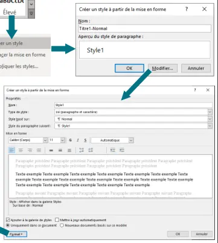
Page 12
Gestion des paragraphes
- Lier les styles
- Automatiser l’application des styles
- Mettre en forme le texte pendant la frappe
- Modifier un style de l’accès rapide
| ① | ①② |
- Choisir le style du paragraphe
- Mise en forme liée
| • Choisir le style du paragraphe suivant | ② |
Connaissances des notions de base Word
Gestion de l’espacement

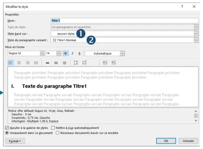
Page 13
- Espacement des titres et des paragraphes
- Ne pas utiliser de paragraphes vides
- Paragraphes ne contenant pas de texte
| • Symboliser par le caractère non affichable | ④ |
- Utiliser l’espacement de paragraphe
| • Utiliser l’outil « Interligne et espacement de paragraphe » | ① |
| Choisir l’interligne du paragraphe | ② |
| • | Ajouter ou supprimer l’espace | ③ |
| • Paramétrer les options d’interligne | ④ |
①
| • | L’alignement | |
| • | Gauche | |
| • | Centrer | |
| • | Droite | |
| • | Justifier | |
| • | Le retrait | ② |
| • | L’espacement | |
| • | Avant | |
| • | Après | |
| • | L’interlignage |
③
- À partir de l’accès rapide des styles
- Clic droit sur un style
- Modifier le style
- Bouton Format
- Options d’espacement
- Applique la modification à tous les paragraphes liés au style

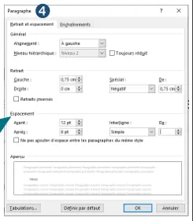

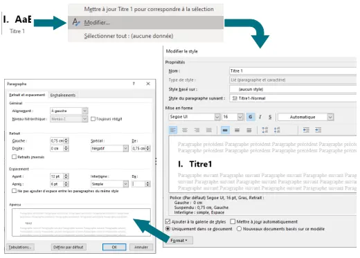
Page 14
Connaissances des notions de base Word
Gestion de l’alignement
Gestion des alignements
- Alignement des titres et des paragraphes
- Taquets de retrait de la règle

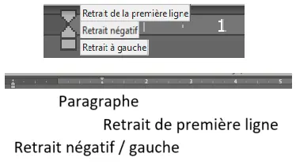
Page 15
- Options des paragraphes
Connaissances des notions de base Word
Gestion des tabulations

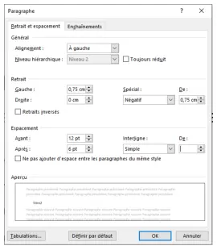
Page 16
- Utilisation des tabulations
- Taquet gauche
- Taquet centré
- Taquet droit
- Taquet décimal
- Caractère non imprimable « tabulation »
- Un caractère « tabulation » par taquet sur la règle
- Utilisation des tabulations durant la création du document
- Positionner les tabulations durant la frappe
- Sélectionner le texte à aligner
- Positionner les taquets de tabulation
- Créer un style pour une réutilisation

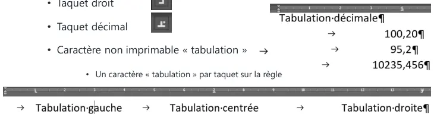
Page 17
Connaissances des notions de base Word
Gestion des sauts
- Les différents types de sauts
- Saut de page
- Permet de fixer le contenu d’une page
- Poursuite de la mise en forme
- En-tête de page
- Pied de page
- Orientation de la page
- Numérotation des pages
- Saut de colonne
- Permet de définir la fin du contenu d’une colonne
- Indiquer le texte qui doit être dans une autre colonne
Page 18
- Sauts de section
- Saut de section page suivante
- Fixer le contenu d’une page
- Définir la fin d’une section et le début d’une nouvelle
- Changer la mise en forme
- En-tête de page
- Pied de page
- Orientation de la page
- Numérotation des pages
- Saut de section continu
- Définir la fin d’une section et le début d’une nouvelle
- Insérer une mise en page différente dans une page
- Marges différentes
Connaissances des notions de base Word
Gestion de la table des
matières
Page 19
Gestion de la table des matières
- Insertion de la table des matières
- Ajout de la table des matières
- À partir du menu Références
| • Choisir une table des matières | ① |
ou
| • Créer une Table des matières personnalisée | ② |
① ②
- Définir la table des matières personnalisée
- Choisir le format
- Choisir les niveaux à afficher
- Quel « Titre » afficher ?
- Regarder les aperçus
- Choisir les caractères de suite

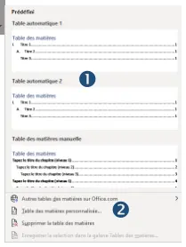

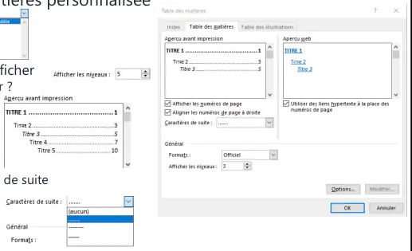
Page 20
- Personnaliser la table des matières
- Dépend de la mise en forme des styles TM X
- Apparaît au fur et à mesure de leur utilisation
| Style Titre X | Style TM X de la table |
| du document | des matières du document |
Tenant Microsoft 365
Démo
Mise en forme d’un document

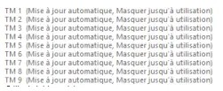
Page 21
Connaissances des notions de base Word
TP
Démo
Utilisation de Word
Référence du document : 1Nw7I-8Wr17r1iJIvcze8T1R2qOvO8qvP · SHA-256 7677971f03707dff…
Énoncé · Enoncé du TP - Utilisation de Word · 6 pages transcrites
Page 1
Utilisation de Word
TP du Module 02 – Notions de base sur Word
Avant de démarrer ce TP, il convient d’avoir suivi les vidéos du module 2.
Durée estimée
60 à 90 minutes
Énoncé
Objectifs :
- Mettre en forme un document Word
Prérequis :
- Avoir installé Office 365.
- Récupérer deux documents :
- « Système Solaire – Document Brut.docx », document à mettre en forme
- « Système Solaire – Document Fini.pdf », document contenant le résultat attendu
Chaque paragraphe du document a été identifié
- Mettre en forme les différents paragraphes en fonction des directives suivantes.
Titre 1
| Nom | Titre 1 |
|---|---|
| Style basé sur | Aucun style |
| Style du paragraphe suivant | T1-Paragraphe |
| Police | Comic Sans Ms |
| Taille | 14 pts - Gras. |
| Espacement | 12 points avant 6 points après |
| Numérotation | I, II, III … Numéro suivi d’un espace |
| Retrait gauche | 0,5 cm |
Page 2
- Mettre en forme les paragraphes (T2) :
Titre 2
| Nom | Titre 2 |
|---|---|
| Style basé sur | Aucun style |
| Style du paragraphe suivant | T2-Paragraphe |
| Police | Comic sans ms |
| Taille | 13 pts - Gras. |
| Espacement | 6 points avant 3 points après |
| Numérotation | A., B., C. … Numéro suivi d’un espace |
| Retrait gauche | 0,5 cm |
- Mettre en forme les paragraphes (T3) :
Titre 3
| Nom | Titre 3 |
|---|---|
| Style basé sur | Aucun style |
| Style du paragraphe suivant | T3-Paragraphe |
| Police | Comic sans ms |
| Taille | 12 pts - Gras/Italique |
| Espacement | 6 points avant 3 points après |
| Numérotation | 1., 2., 3… Numéro suivi d’un espace |
| Aligner à gauche | 1 cm |
- Mettre en forme les paragraphes (T4) :
Titre 4
| Nom | Titre 4 |
|---|---|
| Style basé sur | Aucun style |
| Style du paragraphe suivant | T4-Paragraphe |
| Police | Comic sans ms |
| Taille | 11 pts - Italique |
| Espacement | 4 points avant 0 point après |
| Numérotation | a), b), c)… Numéro suivi d’un espace |
| Aligner à gauche | 1,5 cm |
Pensez à définir la liste à plusieurs niveaux pour tous ces titres.
- Mettre en forme les paragraphes (P0) :
Paragraphes (P0)
| Nom | P0_Paragraphe |
|---|---|
| Style basé sur | Aucun style |
| Police | Cambria |
| Taille | 14 pts |
| Espacement | 0 point avant 0 point après |
| Aligner | Justifier |
Page 3
- Mettre en forme les paragraphes (P1) :
Paragraphes (P1)
| Nom | T1-Paragraphe |
|---|---|
| Style basé sur | Aucun style |
| Style du paragraphe suivant | T1-Paragraphe |
| Police | Cambria |
| Taille | 13 pts |
| Espacement | 0 point avant 6 points après Ajouter de l’espacement entre les paragraphes de même style |
| Retrait | Retrait gauche 0,75 cm |
| Aligner | Justifier |
- Mettre en forme les paragraphes (P2) :
Paragraphes (P2)
| Nom | T2-Paragraphe |
|---|---|
| Style basé sur | Aucun style |
| Style du paragraphe suivant | T2-Paragraphe |
| Police | Cambria |
| Taille | 12 pts |
| Espacement | 0 point avant 4 points après Ajouter de l’espacement entre les paragraphes de même style |
| Retrait | Retrait gauche 1,25 cm |
| Aligner | Justifier |
- Mettre en forme les paragraphes (P3) :
Paragraphes (P3)
| Nom | T3-Paragraphe |
|---|---|
| Style basé sur | Aucun style |
| Style du paragraphe suivant | T3-Paragraphe |
| Police | Cambria |
| Taille | 11 pts |
| Espacement | 0 point avant 0 point après Ajouter de l’espacement entre les paragraphes de même style |
| Retrait | Retrait gauche 1,75 cm |
| Aligner | Justifier |
Page 4
- Mettre en forme les puces (TP2) :
Puces (TP2)
| Nom | T2-Puces |
|---|---|
| Style basé sur | Aucun style |
| Style du paragraphe suivant | T2-Puces |
| Police | Cambria |
| Taille | 12 pts |
| Espacement | 0 point avant 4 points après Ajouter de l’espacement entre les paragraphes de même style Interligne Simple |
| Retrait | Retrait gauche 1,25 cm Retrait négatif : 0,5 cm |
| Aligner | Justifier |
| Puce | ➢ |
- Mettre en forme les puces (TSP2) :
Puces (TSP2)
| Nom | T2-SousPuces |
|---|---|
| Style basé sur | Aucun style |
| Style du paragraphe suivant | T2-SousPuces |
| Police | Cambria |
| Taille | 11 pts - italique |
| Espacement | 0 point avant 4 points après Ajouter de l’espacement entre les paragraphes de même style |
| Retrait | Retrait gauche 1,75 cm Retrait négatif : 0,5 cm |
| Aligner | Justifier |
| Puce | ✓ |
- Mettre en forme les puces (TP3) :
Puces (TP3)
| Nom | T3-Puces |
|---|---|
| Style basé sur | Aucun style |
| Style du paragraphe suivant | T3-Puces |
| Police | Cambria |
| Taille | 11 pts |
| Espacement | 0 point avant 4 points après Ajouter de l’espacement entre les paragraphes de même style |
| Retrait | Retrait gauche 1,75 cm Retrait négatif : 0,5 cm |
| Aligner | Justifier |
| Puce |
Page 5
- Mettre en forme les puces (TSP3) :
Puces (TSP3)
| Nom | T3-SousPuces |
|---|---|
| Style basé sur | Aucun style |
| Style du paragraphe suivant | T3-SousPuces |
| Police | Cambria |
| Taille | 10 pts - Italique |
| Espacement | 0 point avant 4 points après Ajouter de l’espacement entre les paragraphes de même style |
| Retrait | Retrait gauche 2,25 cm Retrait négatif : 0,5 cm |
| Aligner | Justifier |
| Puce |
- Mettre en forme les puces (TP4) :
Puces (TP4)
| Nom | T4-Puces |
|---|---|
| Style basé sur | Aucun style |
| Style du paragraphe suivant | T4-Puces |
| Police | Cambria |
| Taille | 10 pts |
| Espacement | 4 points avant 2 points après Ajouter de l’espacement entre les paragraphes de même style |
| Retrait | Retrait gauche 2 cm Retrait négatif : 0,5 cm |
| Aligner | Justifier |
| Puce |
- Mettre en forme les puces (TSP4) :
Puces (TSP4)
| Nom | T4-SousPuces |
|---|---|
| Style basé sur | Aucun style |
| Style du paragraphe suivant | T4-SousPuces |
| Police | Cambria |
| Taille | 10 pts - Italique |
| Espacement | 0 point avant 2 points après Ajouter de l’espacement entre les paragraphes de même style |
| Retrait | Retrait gauche 3,25 cm Retrait négatif : 0,5 cm |
| Aligner | Justifier |
| Puce |
Page 6
- Mettre en forme le texte signalé (Début_tab et Fin_tab) en tableau
- Tableau 5 foncé – accentuation 3
- Mettre en forme les images
Le texte et les images sont présentés sur 2 colonnes.
- Créer la table des matières en première page
- Mettre un filigrane sur les pages
- Mettre un en-tête sur chaque page des planètes
- Mettre une numération sur toutes pages sauf la page de garde
- Rajouter une page de garde avec la présentation que vous souhaitez.
Référence du document : 1cpVO66OSKeYwpzWHd6M9vMopjymmpmbP · SHA-256 d71a06cce8c72a7c…
Correction · Solution du TP - Utilisation de Word · 25 pages transcrites
Correction originale : à consulter après avoir tenté l’exercice.
Page 1
Utilisation de Word
Solution
TP du Module 02 – Notions de base sur Word Avant de démarrer ce TP, il convient d’avoir suivi les vidéos du module 2.
Durée estimée 60 à 90 minutes
Approche méthodologique Avant de se lancer bille en tête dans le TP, il est intéressant d’analyser le document dans sa globalité et de recenser les besoins afin d’éviter de repasser plusieurs fois pour faire des modifications dans les styles et ainsi perdre du temps.
Voici la méthodologie :
| • | Relever l’ensemble des styles nécessaires |
| • | Configuration des styles |
o Configuration du premier titre o Configuration de la liste de titres à plusieurs niveaux
| • | Finalisation de la configuration des styles de titres |
| • | Finalisation de la préparation de tous les styles |
| • | Application des styles sur l’ensemble du document |
| 1) | Relever l’ensemble des styles |
| a. | Titre 1 |
| b. | Titre 2 |
| c. | Titre 3 |
| d. | Titre 4 |
| e. | P0_Paragraphe |
| f. | T1-Paragraphe |
| g. | T2-Paragraphe |
| h. | T3-Paragraphe |
| i. | T2-Puces |
| j. | T2-SousPuces |
| k. | T3-Puces |
| l. | T3-SousPuces |
m. T4-Puces
| n. | T4-SousPuces |
Page 2
Création des styles Identifiez les styles présents dans la galerie de styles : Si certains styles n’apparaissent pas (comme Titre1, Titre2…), cliquez sur la flèche en bas à droite de la capture : Les titres apparaissent maintenant dans la galerie de styles.

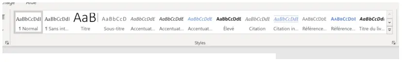

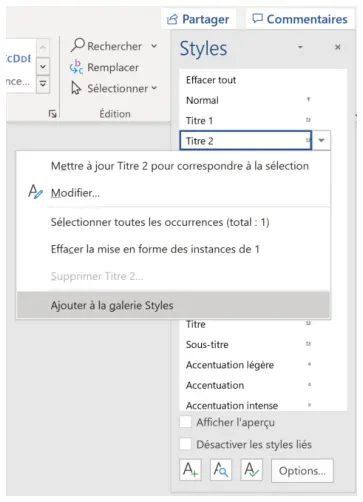

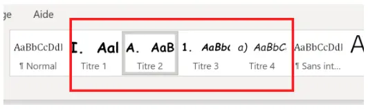
Page 3
Vous pouvez également nettoyer les styles existants afin de clarifier la mise en forme du document : Créez l’ensemble des styles listés précédemment (il n’est pas nécessaire d’assigner polices et autres paramétrages à ce moment).
Voici le résultat après création :

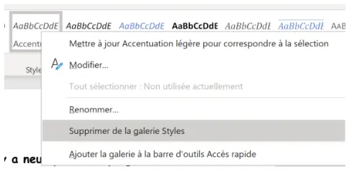

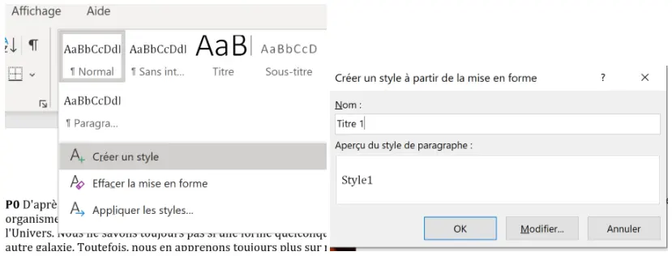

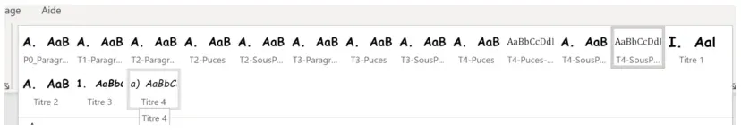
Page 4
Vous pouvez maintenant commencer à paramétrer les différents styles :
| Nom : | ❑ | Titre 1 |
| Style basé sur : | ❑ | Aucun style |
| Style du paragraphe suivant | ❑ | T1-Paragraphe |
| Police : | ❑ | Comic Sans Ms |
| Taille : | ❑ | 14 pts - Gras. |
| ❑ | 12 points avant |
Espacement :
| ❑ | 6 points après |
| ❑ | I, II, III … |
Numérotation :
| ❑ | Numéro suivi d’un espace | |
| Retrait gauche : | ❑ | 0,5 cm |

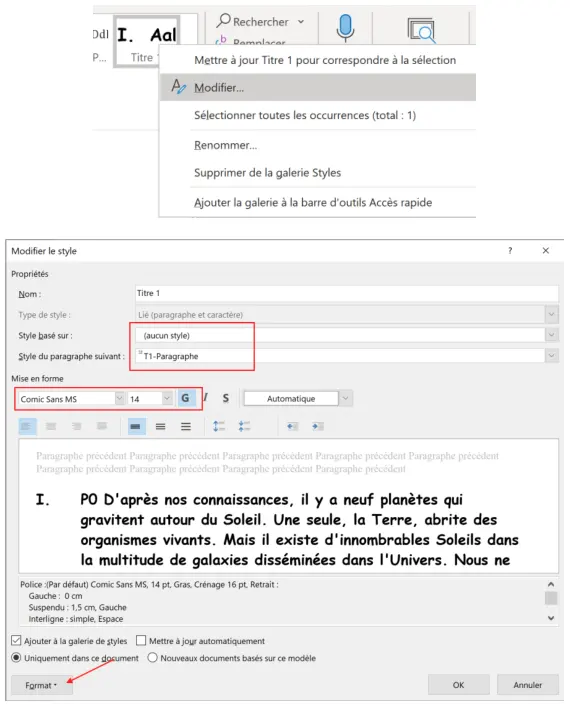
Page 5
Liste de titres à plusieurs niveaux Suite à l’application de ce style sur une première ligne de texte, clic droit sur le numéro dans le texte puis Ajuster les retraits de la liste, puis configurez l’ensemble des retraits et numérotations pour les titres suivants :

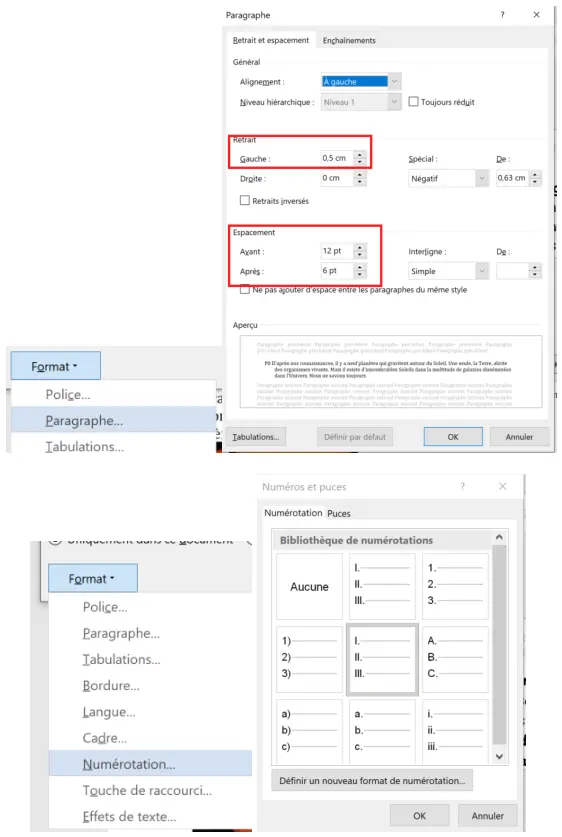

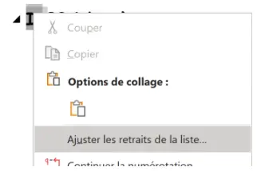
Page 6

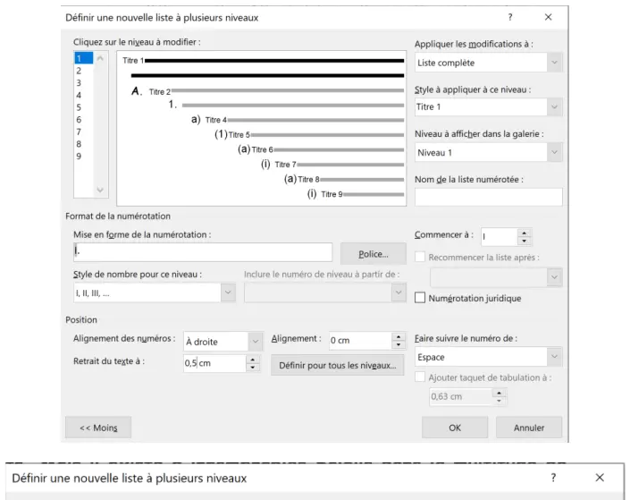

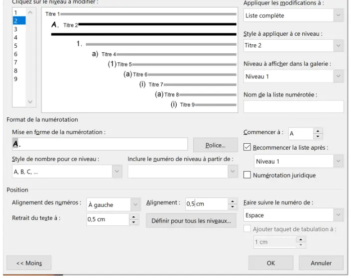
Page 7

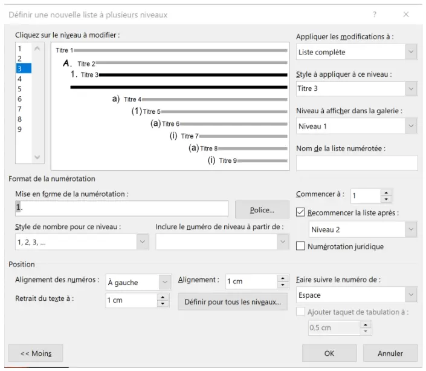

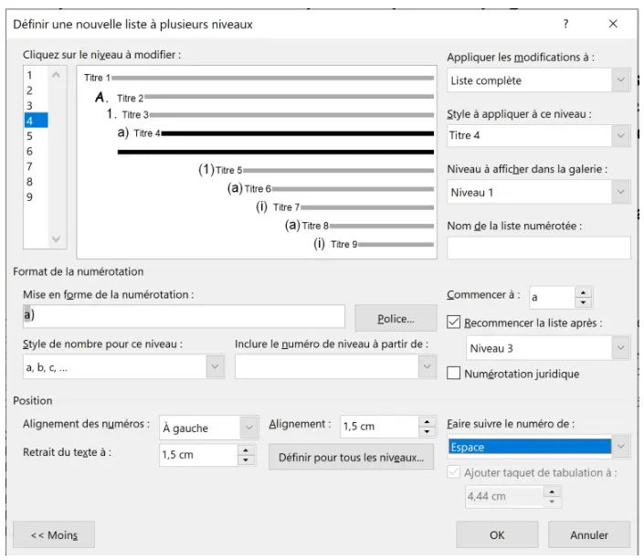
Page 8
Configuration des autres styles
| Nom : | ❑ | Titre 2 |
| Style basé sur : | ❑ | Aucun style |
| Style du paragraphe suivant | ❑ | T2-Paragraphe |
| Police : | ❑ | Comic sans ms |
| Taille : | ❑ | 13 pts - Gras. |
| ❑ | 6 points avant |
Espacement :
| ❑ | 3 points après |
| ❑ | A., B., C. … |
Numérotation :
| ❑ | Numéro suivi d’un espace | |
| Retrait gauche : | ❑ | 0,5 cm |

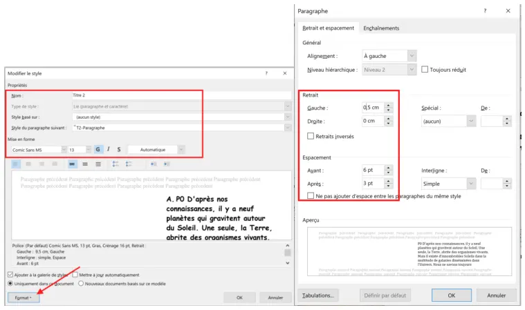
Page 9
| Nom : | ❑ | Titre 3 |
| Style basé sur : | ❑ | Aucun style |
| Style du paragraphe suivant | ❑ | T3-Paragraphe |
| Police : | ❑ | Comic sans ms |
| Taille : | ❑ | 12 pts - Gras/Italique |
| ❑ | 6 points avant |
Espacement :
| ❑ | 3 points après |
| ❑ | 1., 2., 3… |
Numérotation :
| ❑ | Numéro suivi d’un espace | |
| Aligner à gauche : | ❑ | 1 cm |

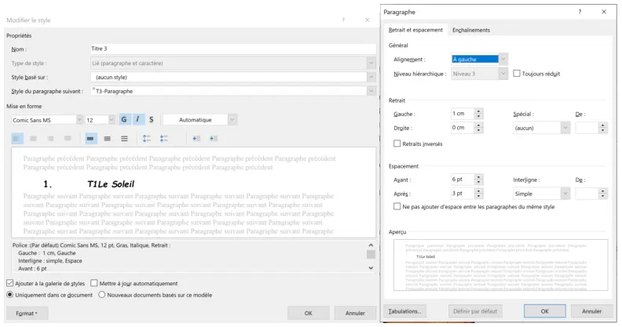
Page 10
| Nom : | ❑ | Titre 4 |
| Style basé sur : | ❑ | Aucun style |
| Style du paragraphe suivant | ❑ | T4-Puces |
| Police : | ❑ | Comic sans ms |
| Taille : | ❑ | 11 pts - Italique |
| ❑ | 4 points avant |
Espacement :
| ❑ | 0 point après |
| ❑ | a), b), c)… |
Numérotation :
| ❑ | Numéro suivi d’un espace | |
| Aligner à gauche : | ❑ | 1,5 cm |

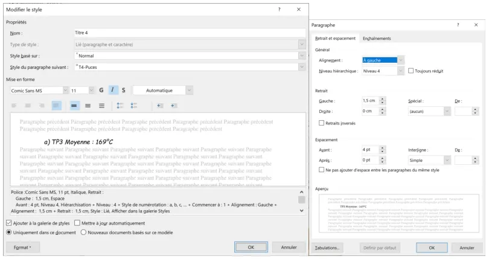
Page 11
| Nom : | ❑ P0_Paragraphe |
| Style basé sur : | ❑ Aucun style |
| Police : | ❑ Cambria |
| Taille : | ❑ 14 pts |
- 0 point avant
Espacement :
- 0 point après
| Aligner | ❑ Justifier |

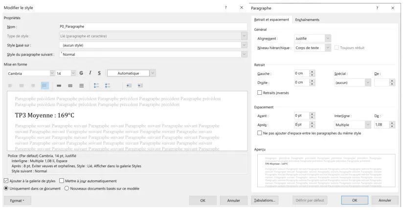
Page 12
| Nom : | ❑ | T1-Paragraphe |
| Style basé sur : | ❑ | Aucun style |
| Style du paragraphe suivant | ❑ | T1-Paragraphe |
| Police : | ❑ | Cambria |
| Taille : | ❑ | 13 pts |
| ❑ | 0 point avant | |
| ❑ | 6 points après |
| ❑ | Ajouter de l’espacement entre les |
paragraphes de même style
| ❑ | Retrait gauche 0,75 cm |
Aligner :
| ❑ | Justifier |

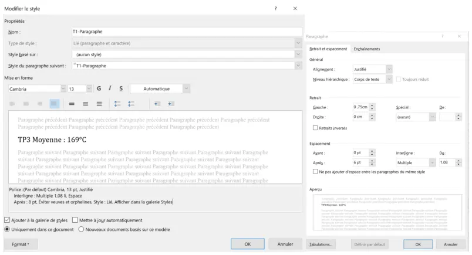
Page 13
| Nom : | ❑ T2-Paragraphe |
| Style basé sur : | ❑ Aucun style |
Style du paragraphe suivant ❑ T2-Paragraphe
| Police : | ❑ Cambria |
| Taille : | ❑ 12 pts |
- 0 point avant
- 4 points après
Espacement :
- Ajouter de l’espacement entre les paragraphes de même style
- Retrait gauche 2 cm
Aligner :
- Justifier

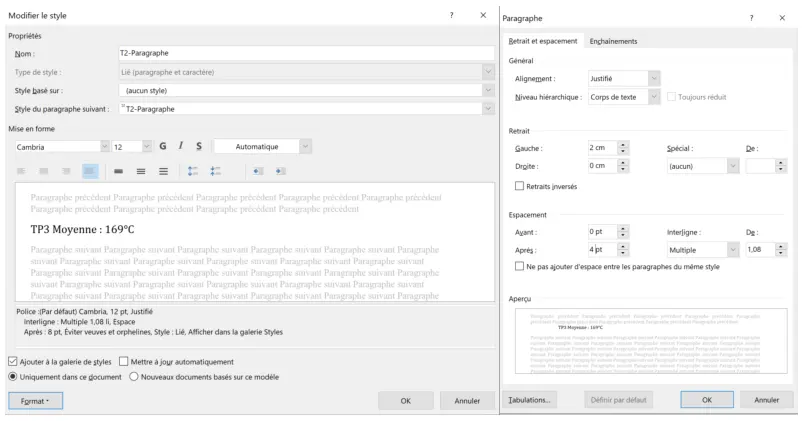
Page 14
| Nom : | ❑ T3-Paragraphe |
| Style basé sur : | ❑ Aucun style |
Style du paragraphe suivant ❑ T3-Paragraphe
| Police : | ❑ Cambria |
| Taille : | ❑ 11 pts |
- 0 point avant
- 0 point après
Espacement :
- Ajouter de l’espacement entre les paragraphes de même style
- Retrait gauche 1,75 cm
Aligner :
- Justifier

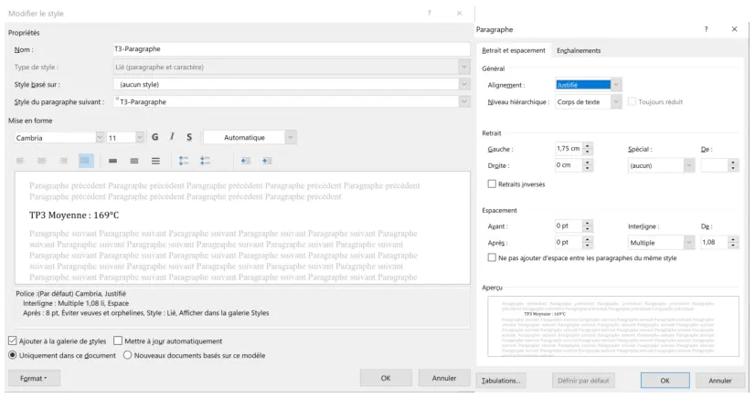
Page 15
| Nom : | ❑ T2-Puces |
| Style basé sur : | ❑ Aucun style |
Style du paragraphe suivant ❑ T2-Puces
| Police : | ❑ Cambria |
| Taille : | ❑ 12 pts |
- 0 point avant
- 4 points après
Espacement :
- Ajouter de l’espacement entre les paragraphes de même style
- Retrait gauche 1,25cm
Aligner :
- Justifier
| Retrait négatif : | ❑ 0,5 cm |
| Puce | ❑ ➢ |

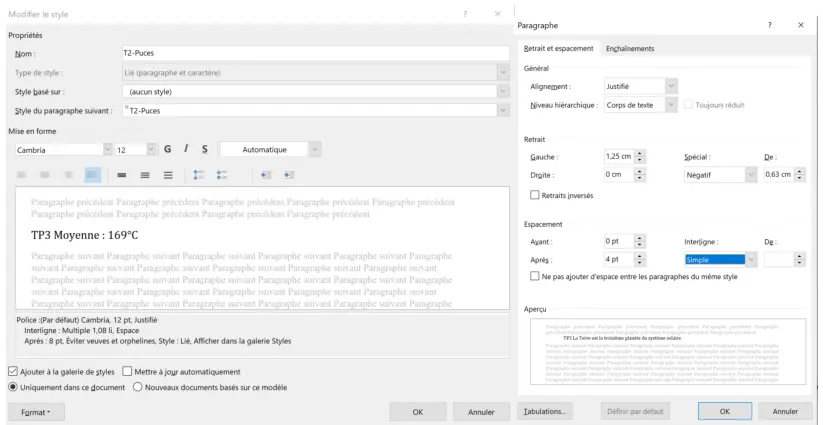

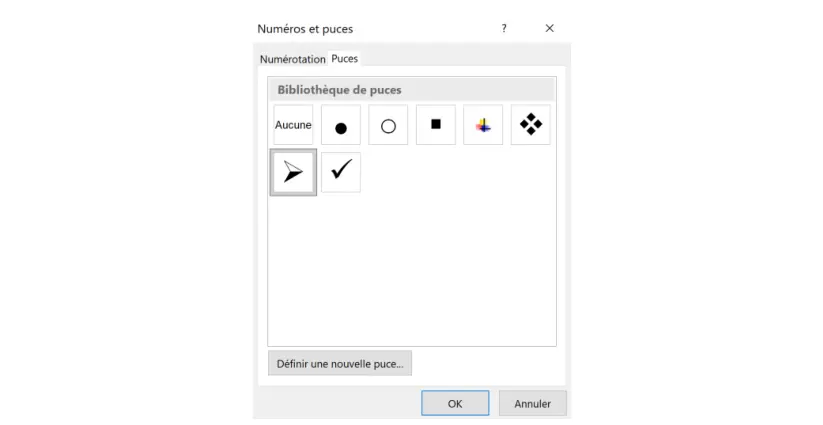
Page 16
| Nom : | ❑ T2-SousPuces |
| Style basé sur : | ❑ Aucun style |
Style du paragraphe suivant ❑ T2-SousPuces
| Police : | ❑ Cambria |
| Taille : | ❑ 11 pts - italique |
- 0 point avant
- 4 points après
Espacement :
- Ajouter de l’espacement entre les paragraphes de même style
- Retrait gauche 1,75cm
Aligner :
- Justifier
| Retrait négatif : | ❑ 0,5 cm |
| Puce | ❑ ✓ |

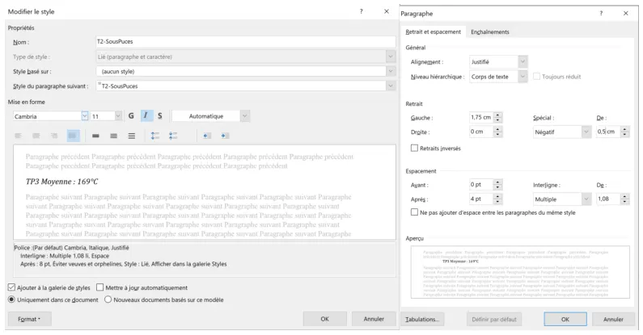
Page 17

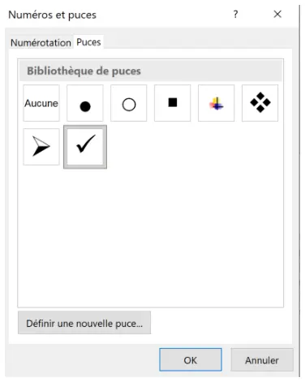
Page 18
| Nom : | ❑ T3-Puces |
| Style basé sur : | ❑ Aucun style |
Style du paragraphe suivant ❑ T3-Puces
| Police : | ❑ Cambria |
| Taille : | ❑ 11 pts |
- 0 point avant
- 4 points après
Espacement :
- Ajouter de l’espacement entre les paragraphes de même style
- Retrait gauche 1,75cm
Aligner :
- Justifier
| Retrait négatif : | ❑ 0,5 cm |
| Puce | ❑ ↪ |

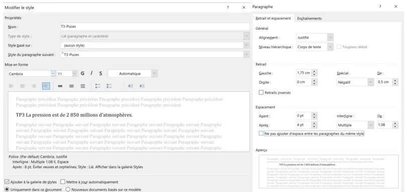

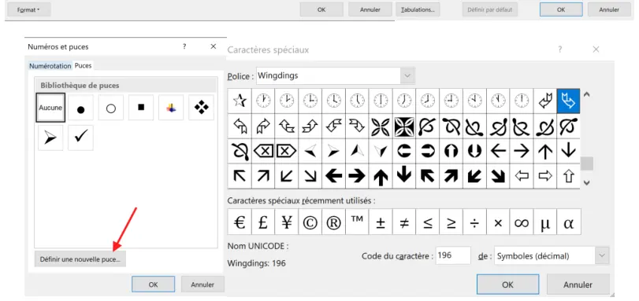
Page 19
| Nom : | ❑ T3-SousPuces |
| Style basé sur : | ❑ Aucun style |
Style du paragraphe suivant ❑ T3-SousPuces
| Police : | ❑ Cambria |
| Taille : | ❑ 10 pts - Italique |
- 0 point avant
- 4 points après
Espacement :
- Ajouter de l’espacement entre les paragraphes de même style
- Retrait gauche 2,25cm
Aligner :
- Justifier
| Retrait négatif : | ❑ 0,5 cm |
| Puce | ❑ ► |

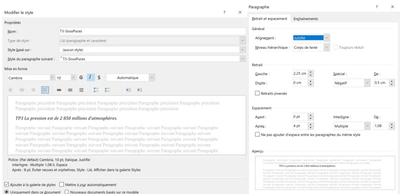

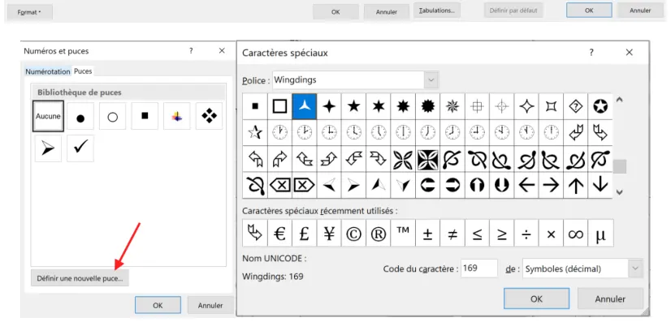
Page 20
| Nom : | ❑ T4-Puces |
| Style basé sur : | ❑ Aucun style |
Style du paragraphe suivant ❑ T4-Puces
| Police : | ❑ Cambria |
| Taille : | ❑ 10 pts - gras |
- 4 points avant
- 2 points après
Espacement :
- Ajouter de l’espacement entre les paragraphes de même style
- Retrait gauche 2 cm
Aligner :
- Justifier
| Retrait négatif : | ❑ 0,5 cm |
| Puce | ❑ ★ |

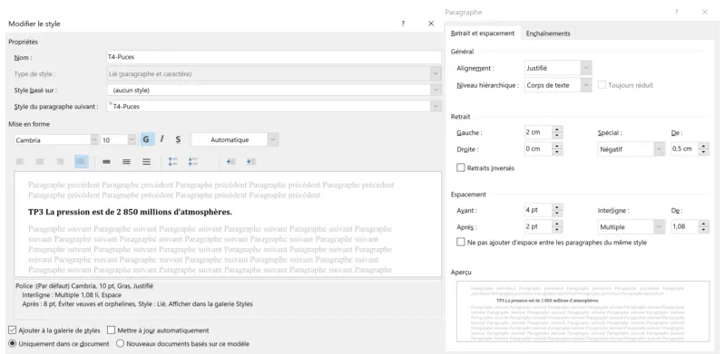

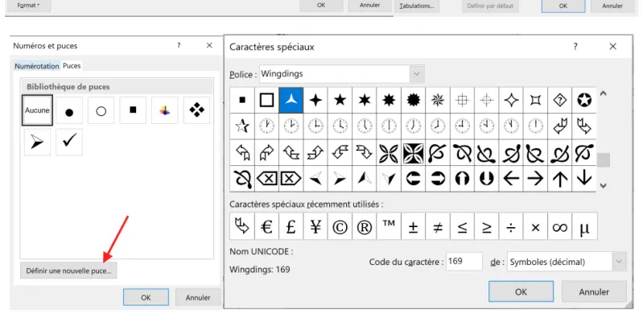
Page 21
| Nom : | ❑ T4-SousPuces |
| Style basé sur : | ❑ Aucun style |
Style du paragraphe suivant ❑ T4-SousPuces
| Police : | ❑ Cambria |
| Taille : | ❑ 10 pts - Italique |
- 0 point avant
- 2 points après
Espacement :
- Ajouter de l’espacement entre les paragraphes de même style
- Retrait gauche 3,25cm
Aligner :
- Justifier
| Retrait négatif : | ❑ 0,5 cm |
| Puce | ❑ ► |

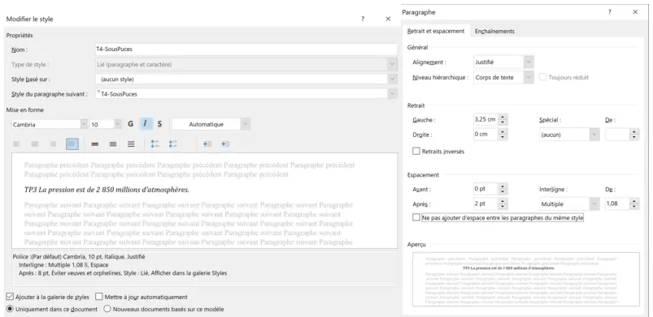

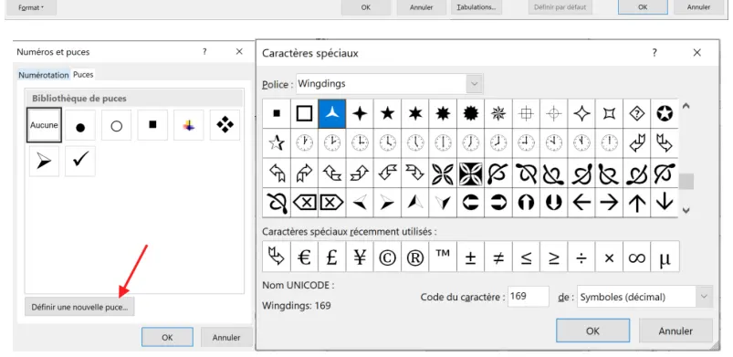
Page 22
Mise en forme des tableaux : Sélectionnez le texte, cliquer sur Insertion / Tableau / Insérer un tableau

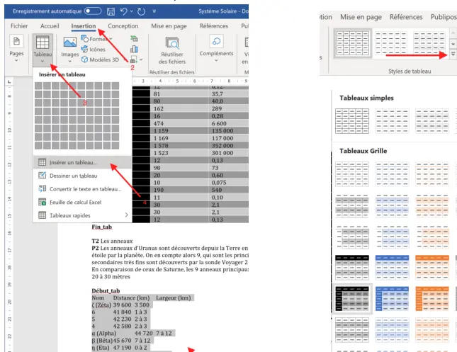


Page 23
Table des matières : Positionnez-vous sur la première page du document puis insérez un saut de section après la table des matières :
Ajouter un filigrane : Sous Conception, sélectionnez Filigrane puis tapez Le système solaire


Page 24
En-tête par page : Placez-vous à la fin d’un chapitre et cliquez sur Mise en Page / Sauts de page / Page suivante Double cliquez dans la zone de l’en-tête et désélectionnez la case Lier au précédent puis modifiez le texte. Répétez l’opération pour tous les chapitres.
Numérotation des pages :


Page 25
Page de garde :


Référence du document : 1zm3iHXF8RS_loevQPbqj7frtV_Kf6mFj · SHA-256 f2e3f47a7476d825…
Complément IA / externe au cours — fiche pédagogique du portail
Cette fiche contient une reformulation et des aides d’apprentissage rédigées par IA. Elle est distincte de la transcription des documents du Drive et ne la remplace pas. Les schémas de synthèse de cette fiche sont des illustrations IA / externes au cours, sauf les captures explicitement attribuées à un document source.
Séquence : Microsoft 365 — Outils collaboratifs
Rôle dans le parcours : prendre en main Word et produire un document structuré dont la mise en forme reste cohérente lors des évolutions.
Objectifs¶
À l'issue du module, vous devez pouvoir :
- repérer les éléments utiles de l'interface de Word ;
- créer un document en distinguant le contenu de sa mise en forme ;
- appliquer et organiser des styles de titres, de paragraphes et de listes ;
- utiliser une liste à plusieurs niveaux, des tabulations, des sauts et un sommaire automatique ;
- contrôler la cohérence de la structure avant de finaliser le document.
1. Prendre ses repères dans Word¶
Au démarrage, le support distingue la création d'un nouveau document, l'emploi d'un modèle et l'ouverture d'un document récent. Dans la fenêtre de travail, il faut savoir identifier :
| Élément | Rôle décrit dans le support |
|---|---|
| Barre de titre | Affiche le nom du fichier et du logiciel. |
| Ruban | Regroupe les commandes par onglet, par exemple Accueil, Mise en page et Affichage. |
| Barre d'accès rapide | Peut être personnalisée avec les commandes fréquentes. |
| Zone utilisateur | Affiche l'utilisateur de la licence. |
| Zone de rédaction | Contient le texte du document. |
| Barres de défilement | Servent à parcourir le document. |
| Barre d'état | Donne des informations sur le document. |
| Règle | Aide à positionner les éléments et les taquets de tabulation ; elle n'est pas affichée par défaut. |
Premier contrôle
Avant de modifier le document, activez l'affichage des caractères non imprimables depuis l'onglet Accueil. Le support l'utilise pour rendre visibles les retours, espaces et autres éléments qui influencent la structure.
2. Écrire avant de mettre en forme¶
Le support recommande d'abord une phase d'écriture continue : rédiger les pages sans mise en forme, puis identifier les éléments qui devront recevoir une structure — titres, paragraphes, listes à puces et listes numérotées. Cette séparation évite de confondre le texte à produire avec sa présentation.
La mise en forme intervient ensuite : alignement, retraits, taquets de tabulation et espacements entre paragraphes. Le support insiste sur deux pratiques : éviter d'insérer des paragraphes vides pour créer un espacement, et utiliser des sauts pour fixer le contenu d'une page lorsque c'est nécessaire.
Une structure avant l'apparence¶
Un titre ne se limite pas à une police ou une taille. Dans Word, le style associé porte aussi sa place dans la hiérarchie et son comportement avec le paragraphe suivant. Cette logique permet ensuite de créer une numérotation cohérente et un sommaire automatique.
3. Construire une hiérarchie de titres¶
Le support décrit une méthode en trois temps :
- créer les différents titres ;
- définir une liste à plusieurs niveaux ;
- ajuster les retraits, car cette opération peut les modifier.
Pour un titre, les paramètres évoqués sont notamment la numérotation, la police, la casse, la taille, le gras, l'italique, le soulignement, les retraits et l'espacement entre le numéro et le texte. Le séparateur peut être une tabulation ou un espace.
Lorsqu'un titre est mis en forme, il peut servir à mettre à jour un style, par exemple Titre 1. Les autres styles deviennent alors accessibles dans la galerie de styles. La liste à plusieurs niveaux permet d'associer chaque niveau de numérotation au style correspondant.
Éviter les titres seulement visuels
Ne simulez pas une hiérarchie en appliquant manuellement une taille, une couleur ou des espaces à chaque ligne. Le support attend une hiérarchie de styles et une liste à plusieurs niveaux, ce qui permet de maintenir la structure et de générer le sommaire.
4. Structurer les paragraphes et les listes¶
Un style de paragraphe mémorise une structure : nom du style, police, taille, alignement, retraits, espacement et comportement du paragraphe suivant. Le support indique qu'un nouveau style doit être nommé, défini puis sauvegardé afin de réapparaître dans l'accès rapide.
Pour les paragraphes, contrôlez notamment :
- l'alignement attendu : gauche, centré, droite ou justifié ;
- les retraits et les taquets de tabulation placés sur la règle ;
- l'espacement avant et après ;
- le style associé au paragraphe suivant ;
- la cohérence entre les niveaux de listes et leurs styles.
Les styles peuvent aussi être liés afin d'automatiser la mise en forme pendant la saisie. Lorsqu'un style évolue, l'objectif est d'appliquer le changement à la structure concernée plutôt que de reprendre les paragraphes un par un.
5. Finaliser le document¶
Le support associe la finalisation à plusieurs opérations : prévoir une page de garde ou une page de sommaire lorsque nécessaire, insérer les sauts de page adéquats, puis créer le sommaire automatiquement après avoir structuré les titres.
Avant de considérer le document terminé, vérifiez :
- que les titres et les paragraphes ont reçu les styles attendus ;
- que les niveaux de numérotation sont cohérents ;
- que les tabulations, retraits et espacements ne reposent pas sur des paragraphes vides ;
- que les sauts placent réellement le contenu à la page voulue ;
- que le sommaire reflète la hiérarchie des titres.
Mise en pratique et consolidation¶
Le TP associé fournit un document brut, une consigne de mise en forme et une solution. Il est volontairement séparé du cours : l'énoncé décrit les attendus de production, et la correction expose une méthode de préparation et de contrôle des styles.
- TP — présentation
- TP — énoncé
- TP — correction
- Fiche de révision
- Kahoot du module
- Présentation de la séquence
Source et provenance¶
- Sources A — TSSR live :
Module 02 - Support de cours.pdf, Drive1Nw7I-8Wr17r1iJIvcze8T1R2qOvO8qvP, SHA-2567677971f03707dffa663fcdc13ec55278a8fa5330dfce8d78b41a87102199579;Enoncé du TP - Utilisation de Word.pdf, Drive1cpVO66OSKeYwpzWHd6M9vMopjymmpmbP, SHA-256d71a06cce8c72a7c79951cc8bb6c47f5161cdba2b0febc5dc9b927fabe4ada2c;Solution du TP - Utilisation de Word.pdf, Drive1zm3iHXF8RS_loevQPbqj7frtV_Kf6mFj, SHA-256f2e3f47a7476d825f8525abfa64fe4157bd45dbfdbf7582feb5bf5d34fa966c7. - Ressources A du TP :
Système Solaire - Document Brut.docx, Drive1ZOWCMnOK1NFqglEHGPjXzeYCaoAAA0T_, SHA-2568d839dc5b40b1a3529b052fdf60aa53d27b39d7cbdca10f2e56bfea01535368b;Système Solaire - Document Fini.docx, Drive1AAg7SHsX-ZVv0BPdiwyVnpcxL0KlksiO, SHA-256a0a12b8e9f1c2e0ca4349a6312ddaf481a8860f17239c0f2e6372f88795a5a39. - Structuration B : l'ordre des sections, les tableaux, les avertissements et les contrôles reformulent et organisent les notions présentes dans ces sources, sans ajout de source externe.
Complément IA / externe au cours — comprendre la chaîne de mise en forme¶
Cette aide réorganise les notions du support pour préparer le TP. Elle ne constitue pas une capture de Word ni une page du cours original.
Illustration IA / externe au cours — des styles à la table des matières.
Exercice de consolidation IA : modifier le style d’un titre et observer les autres titres associés. Expliquer ensuite pourquoi cette méthode est plus cohérente qu’une mise en forme manuelle répétée. Les captures exactes des commandes restent dans le support original.
M02 — Connaissances des notions de base Word
20 questions
Teste tes connaissances sur ce module.